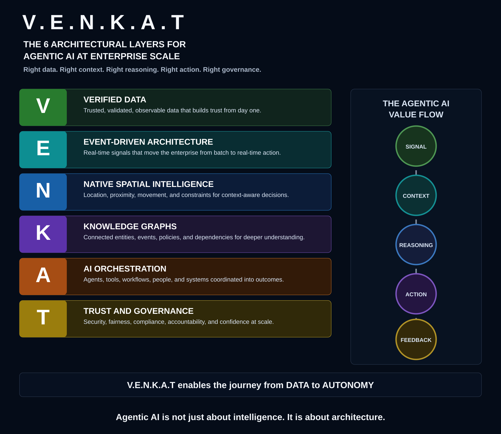

Core thesis
Agentic AI is an architecture problem before it is a model problem. Models can reason over prompts, but enterprises need a surrounding system that determines whether an agent has trusted facts, timely signals, business context, executable tools, accountable owners, and enforceable policy boundaries.
The six layers
V · Verified Data
Establish the factual base through data quality, lineage, observability, stewardship, contracts, privacy, and machine-readable governance metadata.
E · Event-Driven Architecture
Bring operational awareness into the architecture so agents respond to changes as they happen rather than waiting for batch reports or manual escalation.
N · Native Spatial Intelligence
Treat location, proximity, movement, routing, boundaries, networks, and uncertainty as first-class reasoning context.
K · Knowledge Graphs
Connect meaning across people, products, assets, customers, policies, locations, events, time, risk, and dependency.
A · AI Orchestration
Coordinate models, agents, APIs, approved tools, workflows, enterprise systems, budgets, retries, compensation, and human checkpoints.
T · Trust & Governance
Make autonomy accountable through identity, access, policy enforcement, approvals, auditability, explainability, risk thresholds, compliance, monitoring, and rollback.
Value flow
- Signal: identify material operational change.
- Context: enrich it with trusted data, location, relationships, time, and policy.
- Reasoning: evaluate options, objectives, uncertainty, and risk.
- Action: execute through governed tools, workflows, APIs, or humans.
- Feedback: capture outcomes, exceptions, overrides, and lessons.
The architecture gap

Traditional enterprise platforms were optimized for dashboards and human interpretation. Agentic systems require trusted signals, contextual understanding, bounded reasoning, controlled execution, and continuous feedback.
Put the framework into practice
The Practitioner & Certification Suite maps adoption to TOGAF ADM, defines maturity and controls, supplies evidence templates, and establishes certification rules.